Формат ЕГЭ-2026
В демо-комплекте ФИПИ для этого задания используется
.ods, поэтому основной путь курса дальше ориентируется на Либраофис Таблицы. Старый разбор через Эксель сохранен как справочный: логика фильтрации и формул почти та же, но интерфейс может отличаться.
Сначала смотри общий модуль: Табличные задачи и Либраофис.
Задание представляет из себя предпоследний номер ОГЭ по информатике т.е. роботу с БД (обычно Эксель), но усложненный. Все те же правила работы с Эксель, команды, алгоритмы - все применимо здесь. Также допускается применять весь функционал Эксель. Если вдруг вы знаете способ лучше, чем представлен здесь (даже если прямые скрипты) - обязательно решайте им, лишь бы ответ был правильный, а вы не тратили много сил и времени на решение.
Пример 1)
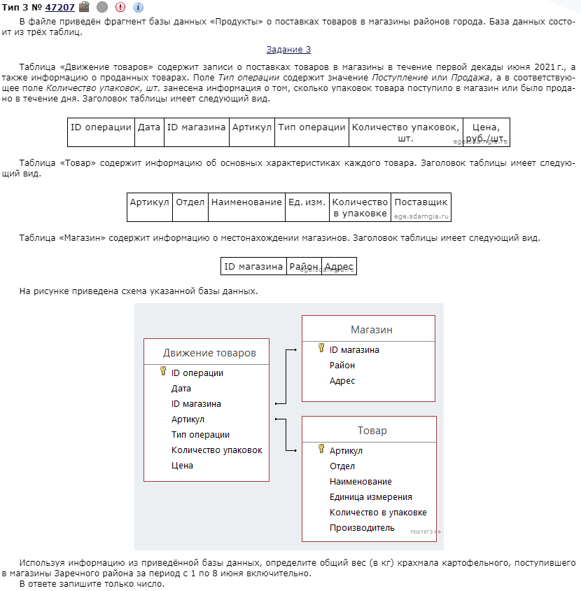
Собственно, для начала, нам нужно скачать файл, который есть в задании. После скачивания мы увидим обычную таблицу Эксель, только, в отличии от ОГЭ, табличка здесь побольше и состоит из 3 листов.
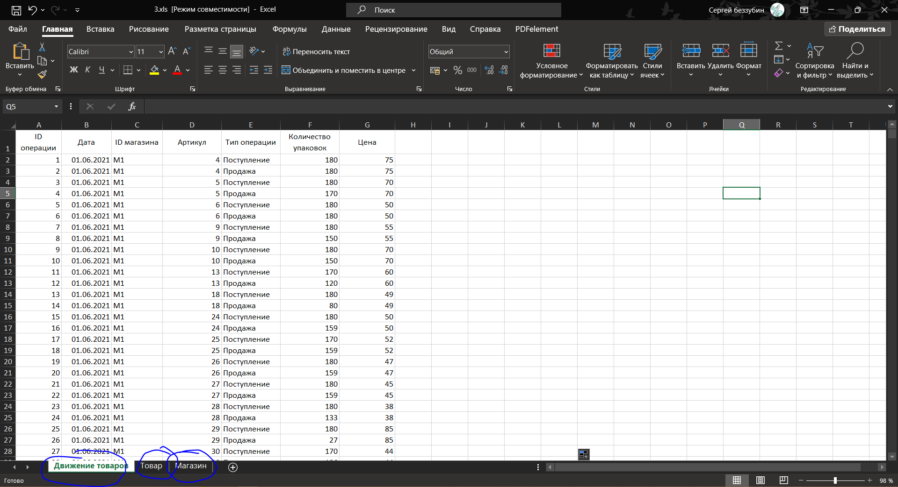
Листы отмечены внизу синим цветом.
Приступим к решению. Прежде всего, нам стоит понять что нас просят: число из первого листа таблицы (кол-во упаковок картофеля есть только на первом листе, о килограммах поговорим позже) при 4 заданных условиях - что тип операции был “Поступление”, что магазины были из Зареченского района, что поступил именно крахмал картофельный и что период в который все это рассматривается был с 01.06 до 08.06. В дальнейшем, мы будем работать именно на выполнение всех 4 условий. Благо последнее из них выполняется автоматически - дат раньше 01.06 и позже 08.06 нет в таблице.
У тех, кто хорошо делал Эксель на ОГЭ уже есть, по сути, готовое решение такой задачи. Задание на ЕГЭ усложнено лишь тем, что необходимые условия для решения раскиданы по листам таблицы, однако сами функции от этого сложнее не стали.
Перейдем на лист “Магазин”. Нас встречает вот такая маленькая табличка.
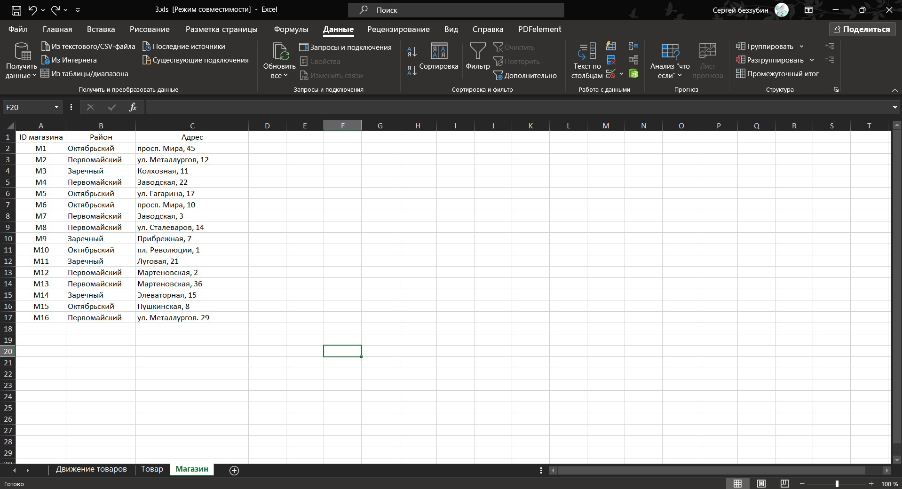
Наша задача узнать ID всех магазинов из Зареченского района. Сделать это можно и вручную, однако, как истинные прогеры, давайте сделаем красиво. Выделив всю таблицу, перейдем на вкладку “Данные” (панель сверху) и выберем “Фильтр”:
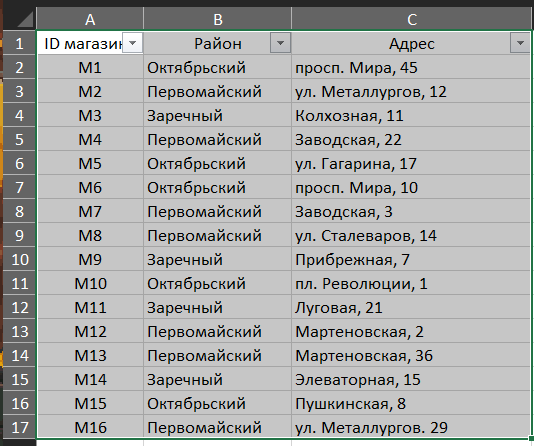
Вуаля, у нас есть настраиваемый фильтр. Кликнув по стрелочке рядом с “Район” выпадет окно, где будет указано какие значения встречаются в таблице, если речь идет о районе. Оставляем только галочку рядом с “Заречным”. Получается отфильтрованная таблица:
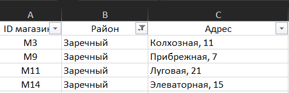
Теперь мы знаем ID магазинов из Заречного района: M3, M9, M11, M14. Их лучше скопировать на первый лист, чтобы не забыть.
Теперь перейдем на второй лист таблицы “Товар”. Там нас ждет вот такая табличка:
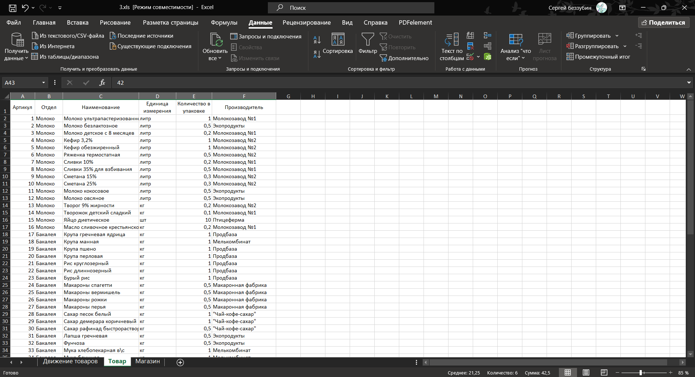
Из этой таблички нам нужно узнать сколько килограмм содержится в 1 упаковке крахмала. Кто заказывал еду из супермаркетов через любую доставку понимает о чем я: когда покупаешь, например, помидоры, выясняется, что цена указана не за килограмм, а за упаковку, в которой 300 грамм. Благо у нас из условия задачи есть название того, о чем идет речь - “Крахмал картофельный”. С помощью обычного поиска на Ctrl + F видим, что артикул крахмала - это 42, а в одной упаковке 0,5кг. Эти числа нам понадобятся на первом листе.
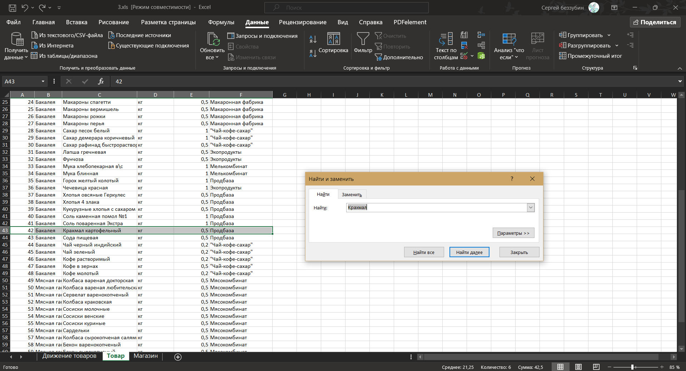
Осталось самое веселое. Переходим на первый лист “Движение товаров” и следим за руками.
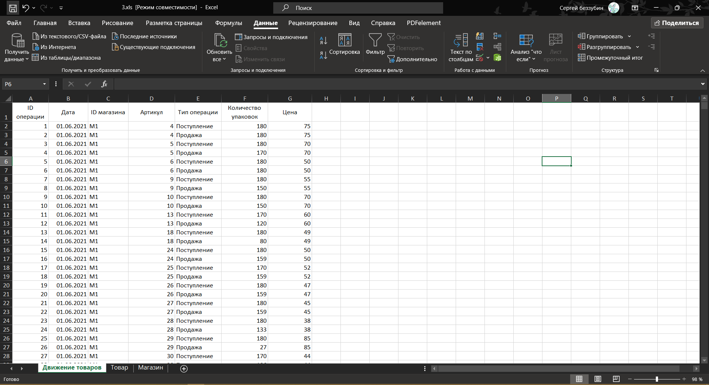
Нам нужно написать такую функцию, чтобы она выполняла все 3 условия (даты выполнены автоматически), которые были названы выше: (ID магазина либо M3, либо M9, либо M11, либо M14), И (артикул = 42) И (тип операции “Поступление”).
Видно, что если хотя бы одно из 3 условий не выполняется, то информация которую мы получим будет не верной. Т.е. все три условия должны быть соединены оператором И, а первое из них (где ID магазина) оператором ИЛИ между ID. Функция в данном случае будет выглядеть так:
=ЕСЛИ(И(ИЛИ(C2="M3";C2="M9";C2="M14";C2="M11");D2=42;E2="Поступление");F2;"")
Выглядит страшно, на деле стоит 1 раз вдуматься что тут написано и зачем и далее будет значительно легче. После того, как написали функцию, растягиваем ее до конца таблицы.
Осталось написать обычную сумму по столбцу, умножить ее на 0,5 (потому, что по сумме мы узнаем кол-во упаковок, а надо кол-во килограмм, а в 1 упаковке 0,5кг, что известно нам из второго листа). Получившиеся число и будет ответом.
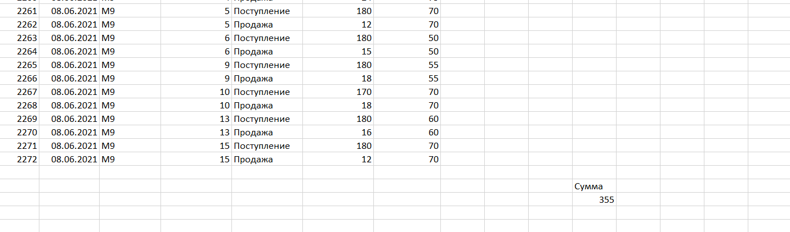
Не забудьте, что сумму нельзя писать в том же столбце, что и функцию выше. Иначе сумма просуммирует сама себя, чего нам не надо.
Ответ: 355.
Чисто в теории этот тип заданий можно делать фул фильтрами, однако:
Фильтры не всегда работают корректно в том смысле, что между листами иногда не копируется нужная информация
Требуется определенная внимательность, чтобы выбирать нужные варианты фильтрации, иногда их бывает много
Пример 2)
Попробуем решить другое задание через фильтры.
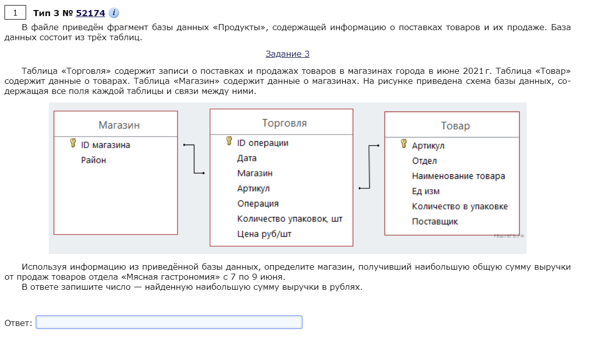
Теперь на листе Торговля у нас много дат - аж до 26.06 или типа того. А по заданию надо лишь с 07.06 по 09.06. Накинем фильтрацию. Делается это так: на вкладках сверху ищем “Данные”, выбираем верхние наименования столбцов и тыкаем “Фильтр”.
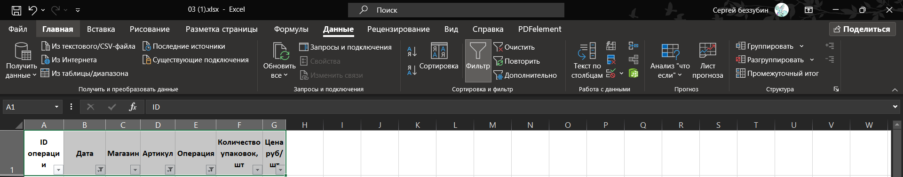
Теперь у нас есть стрелочки, благодаря которым можно настраивать фильтры. Первым делом в “Дата” выберем с 07.06 по 09.06. Затем в столбце “Операция” выберем “Продажа”. Таблица как-то отфильтровывается, пока не важно как. Осталось узнать артикулы - что, собственно, продавали. Для этого перейдем на лист “Товар” и снова фильтранем.
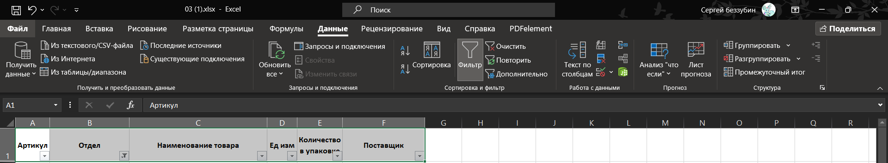
В столбце “Отдел” выбираем “Мясная гастрономия”. Таблица отфильтрована, теперь нас интересуют артикулы товаров, которые продавали.
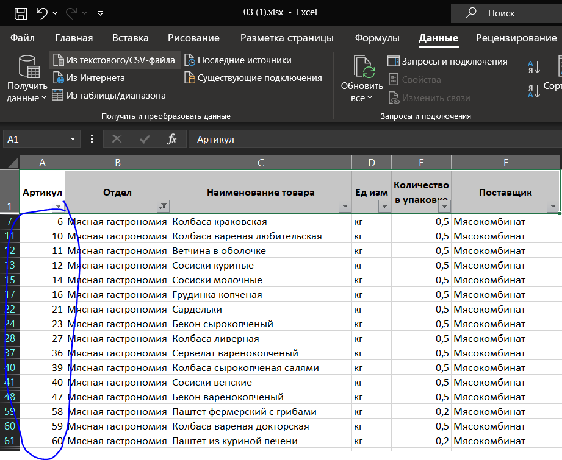
Скопируем их куда-нибудь, чтобы не потерять. Далее возвращаемся на лист “Торговля” и снова фильтруем таблицу, используя фильтрацию на столбце “Артикул”. Оставляем все значения, которые нашли на листе “Товар” т.е. 6, 10, 11, 12 итд.
Вуаля, имеем то, что нужно - отфильтрованная таблица согласно условию задания.
Далее, нужно скопировать получившуюся таблицу (благо, она обычно не слишком большая) и вставить на новый лист. Дело в том, что Эксель не всегда корректно работает с отфильтрованными таблицами (имеется ввиду, что не рекомендуется писать формулы в нее, они могут ссылаться не на то, чего вы хотите), поэтому мы поступаем именно так. Имеем табличку:
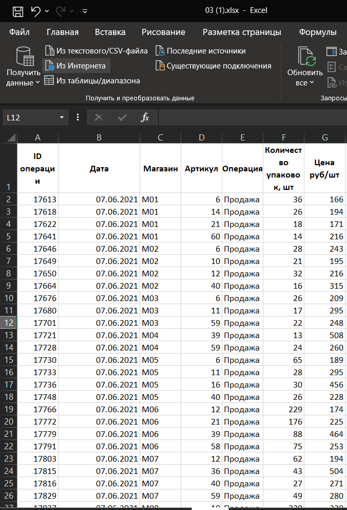
Теперь мы будем работать с ней. Вопрос задачи таков: нужно определить максимальную общую сумму выручки какого-то конкретного магазина. Собсна говоря, теперь, мы ограничимся базовыми формулами из Эксель, с небольшими дополнениями. Сначала посчитаем просто сумму каждой операции. Для этого командой = F2 * G2 в любом удобном столбце справа основных данных найдем выручку от каждой операции. Естественно, формулу надо растянуть до конца таблички. Получим следующее:
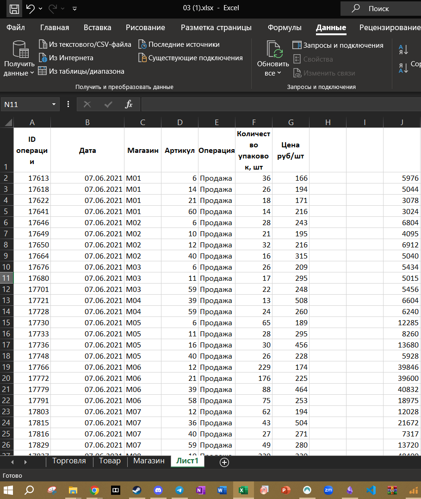
Но это ее не все. Если прямо сейчас найти максимум от столбца J, то мы найдем максимум одной операции (напомню: вопрос был про ОБЩУЮ сумму выручки одного магазина). Чтобы посчитать общую сумму выручки одного конкретного магазина нужно произвести суммирование по магазинам. Благо есть лист, где обозначены наименования всех них. Это лист “Магазины” (скрин не прилагается, ничего страшного). Что нам оттуда нужно? Наименования и нужны. В столбце справа от J на листе “Лист 1” пишем следующее:
=СУММЕСЛИ(C:C;Магазин!A2;J:J)
Какую тончайшую струну ноликов и единичек затрагивает сие богомерзкое недоразумение? Иначе говоря: что делает эта мутная штука?
Работает это так: первый аргумент команды СУММЕСЛИ - это диапазон условий т.е. тот диапазон, который будет сравниваться с тем, что написано во втором аргументе. Второй аргумент - это т.н. критерий т.е. условие суммирования т.е. то, что, если выполняется, выдает суммирование. Третий аргумент - диапазон суммирования т.е. диапазон, который будет суммироваться.
В данном случае, указывая в первом аргументе команды СУММЕСЛИ столбец С, а вторым указывая ссылку на лист и ячейку в нем (где “Магазин” - это лист, ”!” - разделитель, A2 - ячейка на указанном листе), возникает условие, которые выполняется тогда, когда значения ячеек с листа “Магазин” соответствуют значениям ячеек с листа “Лист 1” в столбце С. Т.е. эксель прогоняет столбец С на соответствие столбцу А из листа “Магазин”. Можно заметить, что в нашем “Лист 1” при этом значения такой суммы ограничиваются сотней вниз т.е. их всего 100, как и магазинов на листе “Магазин”. Так и должно быть, все окей.
Ну и собственно из этого уже можно искать максимум командой МАКС (ай мин из того столбца, где СУММЕСЛИ). Выясняется, что это 813425. Это и есть ответ.
Ответ: 813425.
Этот номер не сильно блещет креативностью со стороны экзаменаторов, поэтому и методики его решения, в целом, не сильно отличаются. Однако, рекомендуется поупражняться на следующих заданиях:
37489
63052
56531
В целом, алгоритм решения 3его задания через фильтры выглядит так:
- Накидываем фильтры на все таблицы
- Фильтруем таблицу “Торговля” по соответствующим критериям из условия
- Скопировали и перенесли на другой лист
- Пытаемся ответить на вопрос различными путями, которые описаны выше
Если дело происходит через команду ВПР:
- Пишем ВПР до тех пор, пока у нас не будет полная таблица в соответствии с вопросом задачи (т.е. условно, если надо найти наибольшее кол-во упаковок на районе, вам понадобится на ВПР написать кол-во упаковок с листа “Товары”).
- Копируем на новый лист
- Фильтруем согласно условию
- Пытаемся ответить на вопрос с помощью вышеописанных методов работы с Эксель